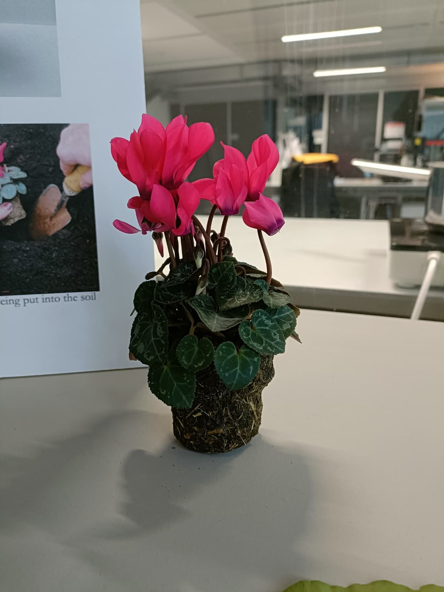
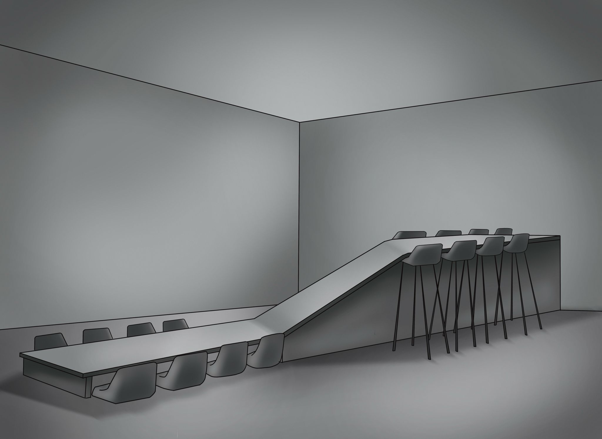
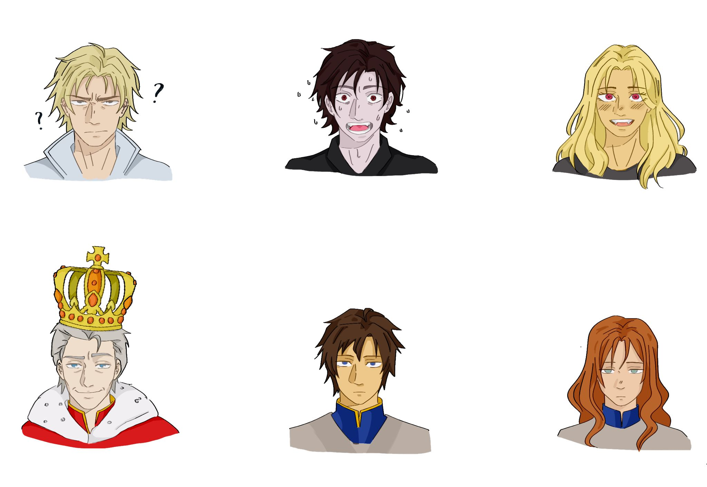
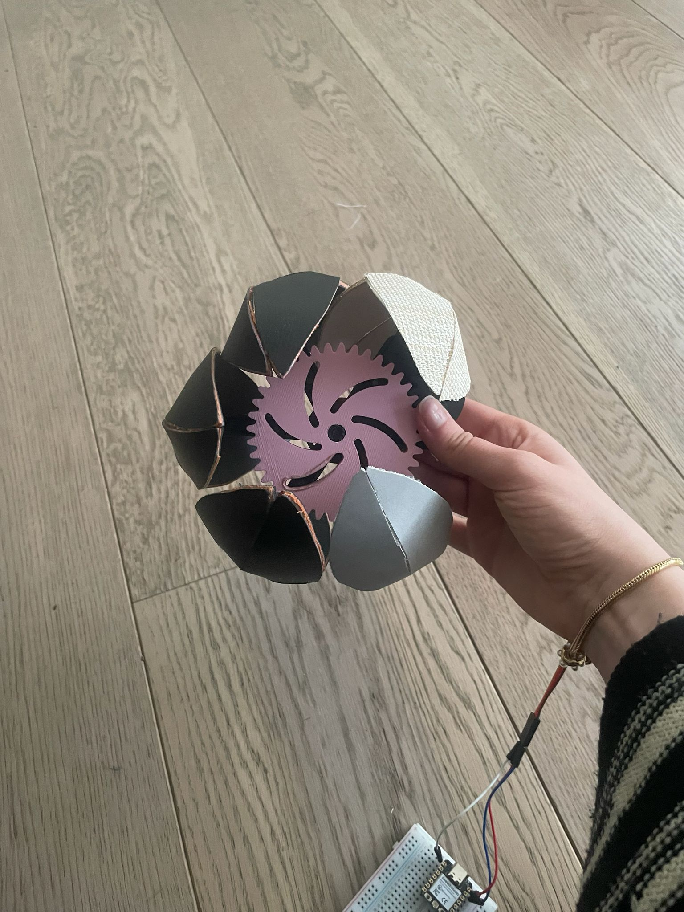

Project Overview
Year Two Projects

Terravy & Reivy
Transforming ivy green waste into a bio-based material and into a biodegradable plant pot and DIY system. This project strengthened my interest in sustainability and biomaterials, material experimentation and circular value creation.

Speculative Dinner
Explored how ambiguity, discomfort and designed artefacts can influence social behaviours. Helped me gain insights about facilitation, participation and the ethical responsibility of designing an experience.

Cluebound
A mystery exploration game where I took part in the visual storytelling, atmosphere and game experience. Helped me connect aesthetics, narrative, user engagement and interaction design.

Exploratory Making
Supported my growth in physical prototyping, mechanisms, materials and iterative making. Built hands-on technical confidence through foamcore, balsa wood and repeated physical interactions.